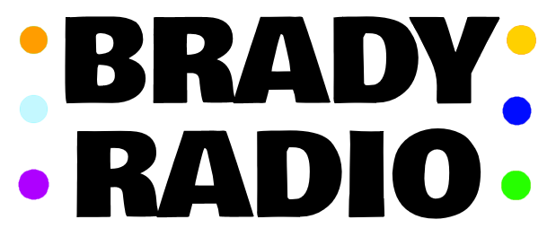

Music for People, Not Algorithms
Brady Radio is a way to share and discover music without lifeless algorithms, AI slop, horrible DJs, and grocery store playlists.
You can share the songs and albums you're listening to with friends, groupchats, or anyone who follows you.
You can then download any songs your friends have shared as playlists so you can listen along. You can also customize your profile to share your favorite songs, albums, and artists so people can get to know you and your taste.
Contact
About
Many times I have been in the car listening to music from radio stations and playlists and I've wanted to share my love for a new song.
There have also been times where nothing I listened to has excited me recently and I feel unable to find something that sparks my love for music.
Social platforms like Twitter, Instagram, and Reddit haven't served this craving for many reasons.
They suffer from gross paid promotions, vapid hot takes, a lack of community, and alogorithms that divert you away from meaningful discovery and conversation.
Streaming platforms attempt to solve this issue with autoplay and automatically generated playlists that end up featuring horrible AI songs, zero taste or originality, and music that always errs on the side of safty over truely interesting ideas.
This is not even mentioning the scandals around artists paying for playlist promotions and making me wonder how much bias they really have.
Radio has been my escape from these problems. It introduces you to music with human input, taste, and community.
Currated playlists fill this same itch for me, they create discussion around music in a way that algorithms just cant.
With Brady Radio my goal is to emulate these same values in a more intimate and free platform.
I want to create a community of music lovers who can share, discover, and discuss music in a space specifically meant for doing so!
While you wait for the app to be released here is some songs I've been listening to lately:
Zen Archer - Todd Rundgren
Mama's Dead - James Brown
It's Only Love - The Beattles
Glory - Jay-Z